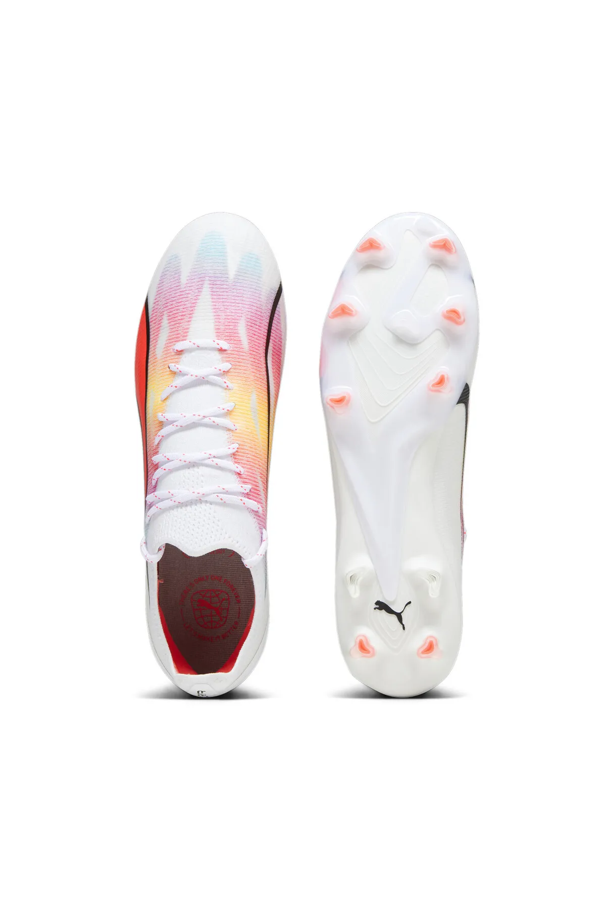
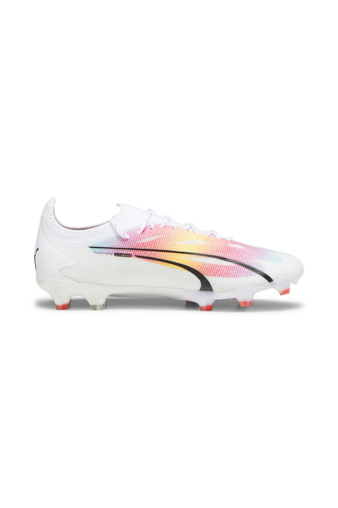

Puma Ultra Ultimate FG/AG İncelemesi

| Üretici: | Puma |
| Krampon Türü: | FG/AG (Doğal + Suni Çim) |
| Model: | Ultra Ultimate |
| Üst Malzeme: | Ultraweave + PWRTAPE |
| Taban: | Çift yoğunluklu SPEEDPLATE |
| Bağlama Şekli: | Bağıcıklı |
| Renk: | ⚪️🔴 |
Genel Tanıtım
Puma Ultra Ultimate, Puma’nın hız odaklı Ultra ailesinin en yenisi olarak, Ultraweave üst yüzeyiyle maksimum hafiflik ve aerodinamik sürat sunmayı hedefliyor. PWRTAPE takviyesiyle anatomik ayağı destekleyen yapı, ani yön değişikliklerinde dahi güvenli kalıyor. SPEEDPLATE taban sistemi ise hem doğal (FG) hem de suni çim (AG) zeminlerde patlayıcı hızlanma ve yüksek enerji geri dönüşü sağlıyor.
Malzeme & Teknoloji
• Ultraweave üst: %20 oranında geri dönüştürülmüş polyesterden üretilmiş, ultra hafif ve dört yönlü esneyebilen yapıdayken üstün hız sunar.
• PWRTAPE destek: Ayağın orta kısmına entegre edilen bant, yön değişimleri ve hız esnasında stabiliteyi artırır.
• SPEEDPLATE taban: Çift yoğunluklu yapı ve FastTrax çiviler ile hem ivmelenme hem de fren performansı optimize edilir.
• NanoGrip iç astar: Hafif ve çıkarılabilir çorap astarı, ayağın krampon içinde kaymasını engeller.
Performans ve Sahadaki Etki
Ultra Ultimate, doğal ve suni zeminde dengeli tutuş sağlıyor. FG/AG taban kombinasyonu, ani dönme ve hızlanmalarda güvenli bir kavrama yaratırken sürtünmeden etkilenmiyor. Ultraweave üst, ilk başta plastiksi hissedilse de zamanla ayağa tam uyum sağlıyor ve top kontrolü arttırıyor. PWRPRINT dokusu, özellikle pas ve şut esnasında topa ekstra kavrama kazandırıyor; dribling deneyiminde kaliteli geri bildirim sunuyor.
Konfor ve Uyumu
OrthoLite dolgu, topuk kavramasını konforlu hale getirirken, ultrahafif yapı yorgunluğu azaltıyor. Ancak birkaç kullanıcı, geniş ayak grubunda dar his verebileceğini belirtilmiş. İlk kullanımdan sonra hafif dar hissedebilir; ayakkabının tamamen şekil alması için birkaç demo maç gerekebilir. Özellikle dar burun kısmı için tavsiye edilen hafif esneme sağlanmalı.
Fiyat ve Satın Alma Bilgisi
Türkiye’de PUMA resmi sitesinde yaklaşık 7.280 ₺ (indirimli), normalde ~9.100 ₺. Fiyat performans olarak, Ultra klasmanında rekabetçi bir seçenek olarak öne çıkıyor. Alternatif olarak yurtdışı sitelerde farklı renk ve versiyonlarıyla da bulunabilir, fakat kargo ve vergi ek yüklemelerine dikkat edilmeli. PUMA